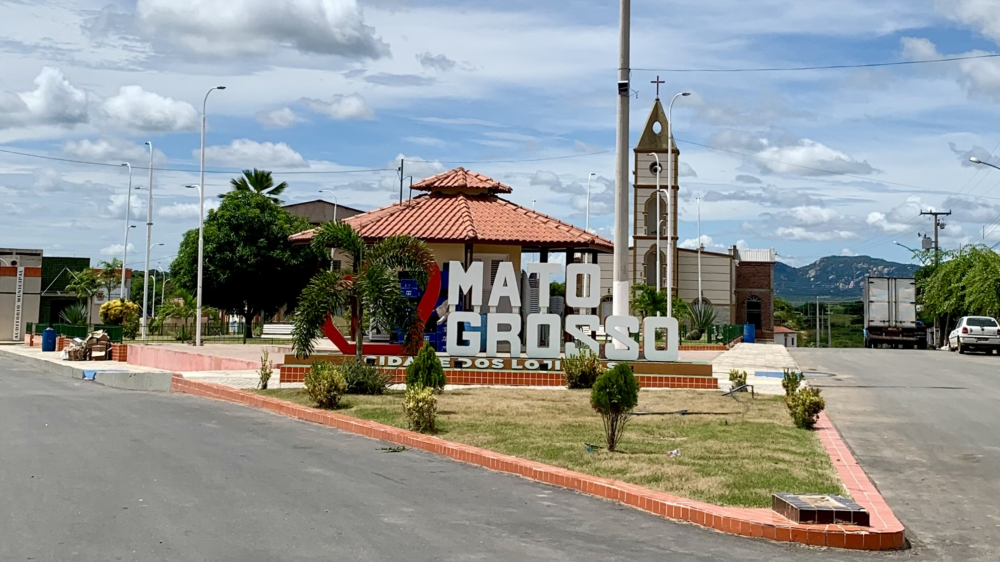

Mato Grosso é um estado brasileiro situado na região Centro-Oeste, conhecido por sua vasta extensão territorial, rica biodiversidade e importância econômica no cenário nacional. Com uma área de aproximadamente 903 mil km², é o terceiro maior estado do Brasil em extensão territorial, e sua população ultrapassa os 3,5 milhões de habitantes . Wikipédia, a enciclopédia livre
